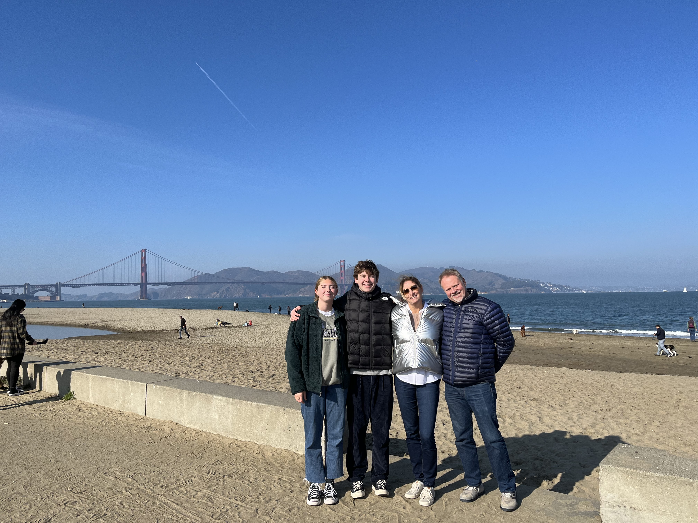

My family includes my mom Karen, my dad Philipp, my sister Amelie, and my dog Sally. My mom and dad have been married for the last 23 years! I was born April 13th, 2003 and my sister was born April 19th, 2006, which makes me 19 and my sister 16 years old.
Currently, my family lives in Mercer Island, Washington. A fun fact about my sister and I is that we have only moved houses once, and it was a short distance of two blocks. Our family loves the community of Mercer Island and we believe it is a great fit for our family.
As far as hobbies go for my family, my mom and dad both love to play tennis and spend time with their friends and family. My sister is a junior at Mercer Island High School and loves to play soccer and lacrosse, and is steadily learning how to speak French. We got our dog Sally, a black lab, 4 years ago. She loves to run after tennis balls and spend time with her friends at the dog park.
Here is my family and I in San Francisco over Winter break.
